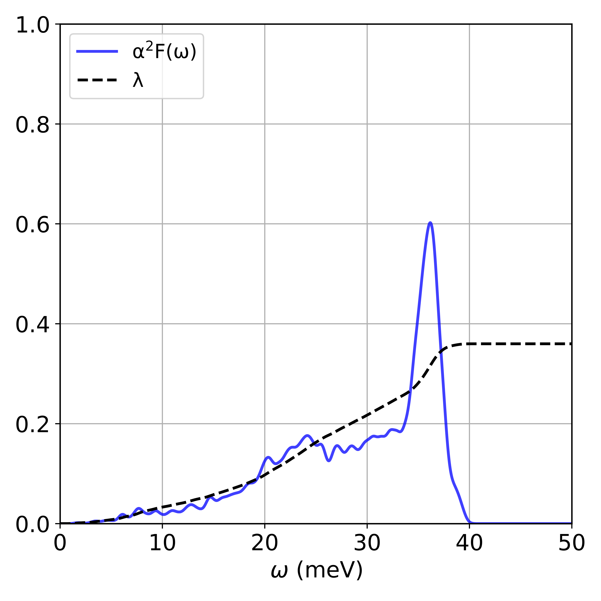

Superconductivity Calculation
This tutorial uses cal_mode: superconductivity in QTrans to calculate
the Eliashberg spectral function, electron-phonon coupling strength, and
superconducting critical temperature \(T_c\) of bulk fcc aluminum.
Warning
This example is intended for learning the workflow. Its sampling and smearing settings are not fully converged. Converge these parameters before using the results for quantitative predictions.
QTrans + OpenMX
Step 1. Prepare the input data
The example is located in tutorials/Al/openmx/superconductivity/.
Its input-sc.yaml reads the prepared data from ../data/, namely
tutorials/Al/openmx/data/:
File |
Purpose |
|---|---|
|
Unit-cell electronic Hamiltonian and overlap data |
|
Reference structure and phonon force data |
|
Sparse EPC gradients and the corresponding supercell mapping |
See Generation of Hamiltonian and Overlap Matrices and EPC Gradient Matrix Preparation for electronic
and EPC data preparation. Reference outputs for this calculation are in
tutorials/Al/openmx/superconductivity/ref/.
Step 2. Configure the calculation
The supplied configuration uses the OpenMX 14-orbital definition and sparse
EPC gradients. Keep advanced.read_sparse_grad_mat: True consistent with
epc.grad_mat_path: ../data/grad_mat_sparse.npy. Phonons are constructed
using a 3 x 3 x 3 supercell, and modes below 0.5 meV are excluded by
epc.phonon_frequency_cutoff.
The complete input-sc.yaml is:
basic:
cal_mode: 'superconductivity'
graph_data_path_uc: ../data/graph_data.npz
nao_max: 14
Ham_type: openmx
outdir: './'
advanced:
read_sparse_grad_mat: True
phonon:
supercell_matrix: [[3.0, 0.0, 0.0], [0, 3, 0], [0, 0, 3]]
unitcell_filename: ../data/Al-pri.vasp
force_infos_filename: ../data/FORCE_SETS
epc:
grad_mat_path: ../data/grad_mat_sparse.npy
mat_info_sc_path: ../data/mat_info_sc.npy
cell_range_cut: [2,2,2]
phonon_frequency_cutoff: 0.5
transport:
k_size: [30,30,30]
q_size: [30,30,30]
bands_indices: '1-3'
smeark: 40
smearq: 0.5
gauss_type: -99
e_thr: 120
superconductivity:
mus: [0.05, 0.25, 0.01]
omega_range: [0, 50]
omega_step: 0.01
Both the k- and q-point grids contain 30 x 30 x 30 points. The smearing
widths smeark and smearq and the threshold e_thr are in meV.
The optional temperature is in K and is omitted in this input. In this
Allen-Dynes workflow, it belongs to the shared transport configuration but does not enter
the pairing spectrum or the critical-temperature formula. It does not set
the electronic smearing width, which is controlled by smeark.
mus specifies the effective Coulomb pseudopotential \(\mu^*\) as
[start, stop, step]. The stop value is excluded, so this example evaluates
0.05 through 0.24 in steps of 0.01. The phonon energy interval for
\(\alpha^2F(\omega)\) is set by omega_range and omega_step, both
in meV.
Step 3. Run and inspect the results
From the tutorial repository root, run:
cd tutorials/Al/openmx/superconductivity/
mpirun -np 8 QTrans_run --config input-sc.yaml > kq30_sc.out
Run from this directory so that the relative data paths resolve correctly. The reference run uses eight MPI ranks. Runtime depends on the hardware and parallel configuration.
The current ref/kq30_sc.out reports:
Lambda = 0.3599351875817346
Omega log = 22.853746572761303 meV
mu Tc (K)
0.0500 1.943423e+00
0.0600 1.587856e+00
0.0700 1.274174e+00
0.0800 1.001670e+00
0.0900 7.691101e-01
0.1000 5.746985e-01
0.1100 4.160603e-01
...
0.2400 1.232024e-07
The integrated coupling strength is \(\lambda \approx 0.35994\), and the logarithmic average phonon energy is \(\omega_{\mathrm{log}} \approx 22.85375\) meV. The calculated \(T_c\) decreases with increasing \(\mu^*\): it is approximately 1.9434 K at 0.05, 1.2742 K at 0.07, and 0.57470 K at 0.10. The experimental transition temperature of Al is about 1.2 K [12]; comparison with experiment requires converged numerical settings and a justified choice of \(\mu^*\).
Check that the log ends with QTRANS JOB SUCCESS. Results are written to
basic.outdir, which is the current directory in this example:
kq30_sc.outis the redirected log and contains \(\lambda\), \(\omega_{\mathrm{log}}\), and the \(T_c\) table.a2f.datcontains the Eliashberg spectral function.epc_strengths_restart.npzstores EPC strengths for restart; the reference log reports its creation, but this file is not included inref/.
Step 4. Plot the Eliashberg spectrum
For this nonmagnetic example, a2f.dat has two columns: phonon energy in
meV and \(\alpha^2F(\omega)\). An excerpt from ref/a2f.dat is:
#omega (meV) a2f
...
24.1200 0.1761
24.1300 0.1761
24.1400 0.1761
24.1500 0.1762
...
The supplied ref/plot.py plots the spectrum and cumulative coupling,
To plot the reference data, run from the calculation directory:
cd ref/
python plot.py
This writes a2f_lambda.png. To plot your own result, run the same script
from the calculation directory instead:
python ref/plot.py
The script reads a2f.dat from the current working directory. The
cumulative coupling approaches the reported total \(\lambda\) at the
upper end of the spectrum; small differences can arise from the rounded
values saved in a2f.dat and the numerical integration.


Figure 1: Eliashberg spectral function \(\alpha^2F(\omega)\) of Al (blue solid line) and cumulative coupling \(\lambda(\omega)\) (black dashed line).
QTrans + ABACUS
The corresponding ABACUS example is in
tutorials/Al/abacus/superconductivity/. It uses the ABACUS electronic
and EPC data from ../data/, nao_max: 40, bands 5–7, and
32 x 32 x 32 k- and q-point meshes. Its complete input is:
basic:
cal_mode: 'superconductivity'
graph_data_path_uc: ../data/graph_data.npz
nao_max: 40
Ham_type: abacus
outdir: './'
advanced:
read_sparse_grad_mat: True
phonon:
supercell_matrix: [[3.0, 0.0, 0.0], [0, 3, 0], [0, 0, 3]]
unitcell_filename: ../data/Al-pri.vasp
force_infos_filename: ../data/FORCE_SETS
epc:
grad_mat_path: ../data/grad_mat_sparse.npy
mat_info_sc_path: ../data/mat_info_sc.npy
cell_range_cut: [2,2,2]
phonon_frequency_cutoff: 0.5
transport:
k_size: [32,32,32]
q_size: [32,32,32]
bands_indices: '5-7'
smeark: 40
smearq: 0.5
gauss_type: -99
e_thr: 120
superconductivity:
mus: [0.05, 0.25, 0.01]
omega_range: [0, 50]
omega_step: 0.01
Run from the tutorial repository root:
cd tutorials/Al/abacus/superconductivity/
mpirun -np 8 QTrans_run --config input-sc.yaml > kq32_sc.out
The current ref/kq32_sc.out reports
\(\lambda = 0.30431\) and
\(\omega_{\mathrm{log}} = 27.03710\) meV, with
\(T_c = 1.02721\) K at \(\mu^* = 0.05\).
The output files and plotting procedure follow the OpenMX example.
The two examples use different electronic data and numerical settings;
their difference alone is not a convergence test or a comparison of solver accuracy.